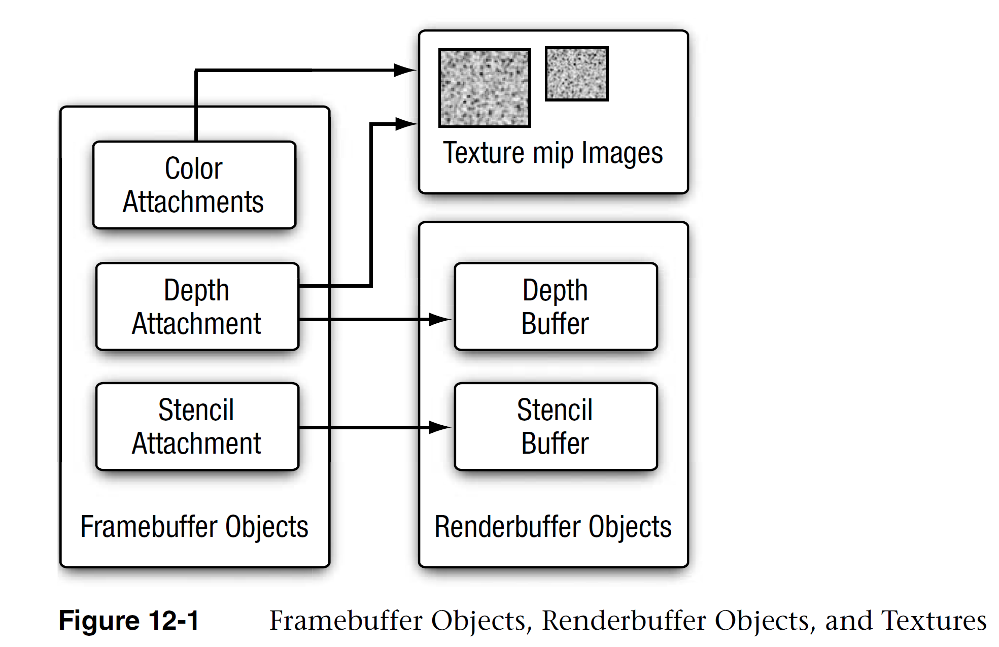
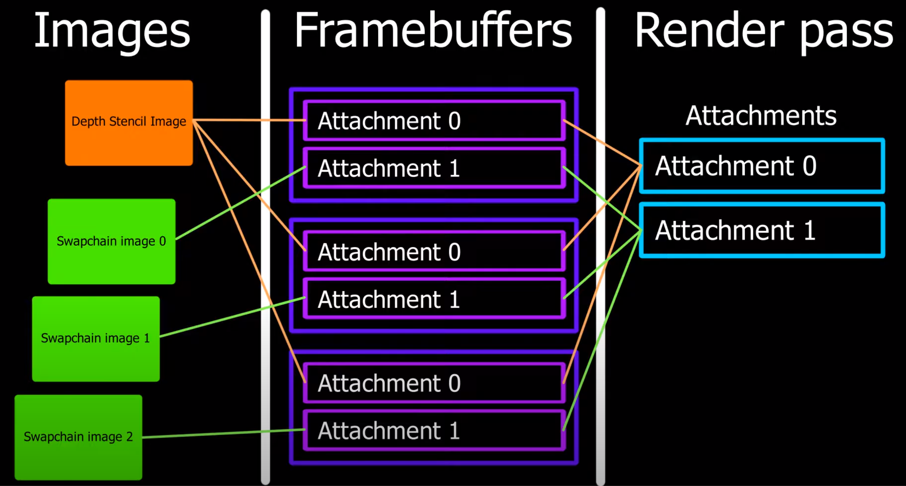

1. GLES Framebuffers
本章主要来自 LearnOpenGL 及 GLES 3.0 编程指南
1.1. 定义
通常我们的操作都是在 默认帧缓冲 (Default Framebuffer ) 的渲染缓冲上进行的。默认的帧缓冲是在你创建窗口的时候生成和配置的（EGL）。
在GL中会使用几种不同类型的屏幕缓冲：用于写入颜色值的颜色缓冲，用于写入深度信息的深度缓冲，以及允许我们基于一些条件丢弃指定片段的模板缓冲。把这几种缓冲结合起来叫做帧缓冲(Framebuffer)。
而使用 帧缓冲对象 (Framebuffer Object) 允许用户自定义帧缓冲，Framebuffer 实际是一个可添加缓冲的容器.
用户可以为其添加纹理 (Textures ) 或 渲染缓冲区 对象（Renderbuffer), 来定义自己的颜色缓冲，深度缓冲, 和模板缓冲。
1.1.1. 应用
渲染到一个非默认的帧缓冲被叫做离屏渲染(Off-screen Rendering) 或 渲染到纹理 (Render to Texture)。
通过自定义帧缓冲可以将你的场景渲染到一个不同的帧缓冲中, 可以使我们能够在当前场景中创建镜子, 倒影这样的效果. 还有很多常见特效需要用到帧缓冲,
- 例如: 阴影贴图, 动态反射和环境贴图, 多道景深技术, 动态模糊, 和后期处理特效等.
1.2. 相关定义
- 默认帧缓冲 Default Framebuffers
- 在进行GLES指令操作前, 需要创建一个 Context 和 绘图表面 (默认 Framebuffer), 这通常由原生窗口系统通过 EGL 等完成.
- 创建 EGL 绘制表面的调用时, 以像素形式指定 宽度,高度, 是否使用 颜色缓冲, 深度缓冲, 模板缓冲, 及这些缓冲区的位深.
- 不能对其进行修改或查询状态操作
glViewport控制帧缓冲的大小, 以及控制阴影深度贴图大小等等- 帧缓冲对象 Framebuffers Objects (FBOs)
- 附着 Attachment
- FBO 仅被视为缓存的容器, 因此使用 FBO 作为渲染目标时，首先需要为 FBO 的附着连接对象，
- 附着是一个内存位置，它能够作为帧缓冲的一个缓冲，可以将它想象为一个图像。
- 创建一个附件方式有两种：纹理或渲染缓冲对象(Renderbuffer)。
- 帧缓冲的3个附着
- 颜色附着 Color Attachment
- 深度附着 Depth Attachment
- 模板附着 Stencil Attachment
- 纹理附件 Textures
- 即普通的 Texture, 根据 Format的不同, 可以分别用作 FBO 中的颜色、深度或者模板附着。
- 渲染缓冲对象 Renderbuffer Objects
- 是一个由应用程序分配的 2D 图像缓冲区。
- 渲染缓冲区可以用于分配和存储 颜色、深度或者模板值，可以用作 FBO 中的颜色、深度或者模板附着。
使用 纹理 和 Renderbuffer 对象, 都支持为 FBO 分别添加三种附着. 但通常使用 Texture 添加颜色附着, 用 Renderbuffer 来添加深度和模板附着. 原因在后面讨论.

(OpenGL ES 3.0 编程指南)
1.3. 创建帧缓冲
- 创建一个帧缓冲对象
glGenFramebuffers(1, &fbo);
- 绑定为激活的(Active)帧缓冲
glBindFramebuffer(GL_FRAMEBUFFER, fbo);
在绑定到GL_FRAMEBUFFER目标之后，所有的读取和写入帧缓冲的操作将会影响当前绑定的帧缓冲。
- 我们也可以使用
GL_READ_FRAMEBUFFER或GL_DRAW_FRAMEBUFFER，将一个帧缓冲分别绑定到读取目标或写入目标。 - 绑定到
GL_READ_FRAMEBUFFER的帧缓冲将会使用在所有像是glReadPixels的读取操作中， - 绑定到
GL_DRAW_FRAMEBUFFER的帧缓冲将会被用作渲染、清除等写入操作的目标。 - 通常都不需要区分它们，使用
GL_FRAMEBUFFER，绑定到两个上。
添加附着: 在这一阶段, 使用Texture或Renderbuffer对FBO添加附着, 代码在下两节种展示.
- 添加附着后, 检查帧缓冲的完整性
if( glCheckFramebufferStatus(GL_FRAMEBUFFER) == GL_FRAMEBUFFER_COMPLETE)
一个完整的帧缓冲需要满足以下的条件：
- 附加至少一个附着（颜色、深度或模板附着）。
- 至少有一个颜色附件(Attachment)。TODO: check angle
- 所有的附件都必须是完整的（保留了内存）。
- 每个缓冲都应该有相同的高度和宽度。
- 如果存在深度和模板附着, 它们必须是相同的图像.
- 所有附着的 GL_RENDERBUFFER_SAMPLES 样本值相同. 若附着对象是纹理, 则此值为0.
- 解绑FBO / 激活默认帧缓冲
glBindFramebuffer(GL_FRAMEBUFFER, 0);
渲染到一个不同的帧缓冲被叫做离屏渲染(Off-screen Rendering)。要保证所有的渲染操作在主窗口中有视觉效果，我们需要再次激活默认帧缓冲，将它绑定到0。
1.4. 纹理附着
- 普通的创建纹理的方式
unsigned int texture;
glGenTextures(1, &texture);
glBindTexture(GL_TEXTURE_2D, texture);
glTexImage2D(GL_TEXTURE_2D, 0, GL_RGB, 800, 600, 0, GL_RGB, GL_UNSIGNED_BYTE, NULL);
glTexParameteri(GL_TEXTURE_2D, GL_TEXTURE_MIN_FILTER, GL_LINEAR);
glTexParameteri(GL_TEXTURE_2D, GL_TEXTURE_MAG_FILTER, GL_LINEAR);
如果你想将你的屏幕渲染到一个更小或更大的纹理上，你需要（在渲染到你的帧缓冲之前）再次调用glViewport，使用纹理的新维度作为参数，否则只有一小部分的纹理或屏幕会被渲染到这个纹理上。(?)
- 将纹理附加在帧缓冲上
glFramebufferTexture2D(GL_FRAMEBUFFER, GL_COLOR_ATTACHMENT0, GL_TEXTURE_2D, texture, 0);
target：帧缓冲的目标（绘制、读取或者两者皆有）attachment：我们想要附加的附件类型。当前我们正在附加一个颜色附件。注意最后的0意味着可以附加多个颜色附件。GL_COLOR_ATTACHMENTi,GL_DEPTH_ATTACHMENT,GL_STENCIL_ATTACHMENTorGL_DEPTH_STENCIL_ATTACHMENT.textarget：你希望附加的纹理类型texture：要附加的纹理本身level：多级渐远纹理的级别。我们将它保留为0
-
纹理对象允许附加一个深度或模板缓冲纹理到帧缓冲对象中。
-
要附加深度缓冲的话，将附件类型
attachment设置为GL_DEPTH_ATTACHMENT。并将纹理的格式(Format)和内部格式(Internalformat)类型变为GL_DEPTH_COMPONENT，来反映深度缓冲的储存格式。 -
要附加模板缓冲的话，将附件类型
attachment设置为GL_STENCIL_ATTACHMENT，并将纹理的格式设定为GL_STENCIL_INDEX。 -
也可以将深度缓冲和模板缓冲合并附加为一个纹理。纹理的每32位数值将包含24位的深度信息和8位的模板信息。将附件类型
attachment设置GL_DEPTH_STENCIL_ATTACHMENT类型，并配置纹理的格式，让它包含合并的深度和模板值。 -
``` glTexImage2D( GL_TEXTURE_2D, 0, GL_DEPTH24_STENCIL8, 800, 600, 0, GL_DEPTH_STENCIL, GL_UNSIGNED_INT_24_8, NULL );
glFramebufferTexture2D(GL_FRAMEBUFFER, GL_DEPTH_STENCIL_ATTACHMENT, GL_TEXTURE_2D, texture, 0); ```
1.5. Renderbuffer 附着
- 创建一个渲染缓冲对象的代码
glGenRenderbuffers(1, &rbo);
- 绑定这个渲染缓冲对象，让之后所有的渲染缓冲操作影响当前的 RBO：
glBindRenderbuffer(GL_RENDERBUFFER, rbo);
- 创建一个深度和模板渲染缓冲对象
glRenderbufferStorage(GL_RENDERBUFFER, GL_DEPTH24_STENCIL8, 800, 600);
创建一个渲染缓冲对象和纹理对象类似，不同的是这个对象是专门被设计作为图像使用的，而不是纹理那样的通用数据缓冲(General Purpose Data Buffer)。
这里我们选择GL_DEPTH24_STENCIL8作为内部格式，它封装了24位的深度和8位的模板缓冲。
- 附加这个渲染缓冲对象到 FBO：
glFramebufferRenderbuffer(GL_FRAMEBUFFER, GL_DEPTH_STENCIL_ATTACHMENT, GL_RENDERBUFFER, rbo);
使用GL_DEPTH_STENCIL_ATTACHMENT表示同时包含深度和模板附着
1.6. Texture VS. Renderbuffer
渲染缓冲对象(Renderbuffer Object) 是在纹理之后引入到OpenGL中，作为一个可用的帧缓冲附件类型的，所以在过去纹理是唯一可用的附件。
Renderbuffer:
-
和纹理图像一样，渲染缓冲对象是一个真正的缓冲，即一系列的字节、整数、像素等。
-
优点: Renderbuffer 会将数据储存为OpenGL原生的渲染格式，它是为离屏渲染到帧缓冲优化过的。
-
Renderbuffer 直接将所有的渲染数据储存到它的缓冲中，不会做任何针对纹理格式的转换，让它变为一个更快的可写储存介质。
-
缺点: Renderbuffer 不能做纹理: 渲染缓冲对象通常都是只写的，所以你不能读取它们, 比如使用纹理访问。
- 当然你仍然还是能够使用
glReadPixels来读取它，这会从当前绑定的帧缓冲(而不是附件本身)中返回特定区域的像素。
因此通常的规则是:
-
如果你不需要从一个缓冲中采样数据，那么对这个缓冲使用渲染缓冲对象会是明智的选择。
-
而如果你需要从缓冲中采样颜色或深度值等数据，那么你应该选择纹理附件。性能方面它不会产生非常大的影响的。
Renderbuffer 对象通常用于深度和模板附件，因为大部分时间我们都不需要从深度和模板缓冲中读取值，只关心深度和模板测试, 但不需要对它们进行采样.
对应到场景中:
- 选择 Texture
- 渲染到一个用作颜色纹理的颜色缓冲区
- 渲染到一个用作阴影的深度纹理的深度缓冲区
- 选择 Renderbuffer
- 多重采样(? 来自"3.0 编程指南" 但 Texture 也有MS, 版本原因?)
- 如果图像不被作为纹理, 则 Renderbuffer 可能带来性能优势:
- GLES 可能以更高效的格式存储 Renderbuffer, 比纹理更适合渲染
- 例如: 利用其写入或者复制到其它缓冲快的特点。交换缓冲这样的操作在使用渲染缓冲对象时会非常快。
- 在每个渲染迭代最后使用的
glfwSwapBuffers，也可以通过渲染缓冲对象实现：只需要写入一个渲染缓冲图像，并在最后交换到另外一个渲染缓冲就可以了。
1.7. 示例: 场景滤镜
1.7.1. 创建阶段
// 创建一个帧缓冲对象，并绑定
unsigned int framebuffer;
glGenFramebuffers(1, &framebuffer);
glBindFramebuffer(GL_FRAMEBUFFER, framebuffer);
// 使用 Texture 添加颜色附着
// 生成纹理
unsigned int texColorBuffer;
glGenTextures(1, &texColorBuffer);
glBindTexture(GL_TEXTURE_2D, texColorBuffer);
glTexImage2D(GL_TEXTURE_2D, 0, GL_RGB, 800, 600, 0, GL_RGB, GL_UNSIGNED_BYTE, NULL);
glTexParameteri(GL_TEXTURE_2D, GL_TEXTURE_MIN_FILTER, GL_LINEAR );
glTexParameteri(GL_TEXTURE_2D, GL_TEXTURE_MAG_FILTER, GL_LINEAR);
glBindTexture(GL_TEXTURE_2D, 0);
// 将纹理对象, 附加到当前绑定的帧缓冲对象颜色(color)附件上
glFramebufferTexture2D(GL_FRAMEBUFFER, GL_COLOR_ATTACHMENT0, GL_TEXTURE_2D, texColorBuffer, 0);
// 使用 Renderbuffer 添加深度和模板附着
// 深度（和模板）测试
// 添加一个深度（和模板）附件到帧缓冲中
unsigned int rbo;
glGenRenderbuffers(1, &rbo);
glBindRenderbuffer(GL_RENDERBUFFER, rbo);
glRenderbufferStorage(GL_RENDERBUFFER, GL_DEPTH24_STENCIL8, 800, 600); // GL_DEPTH24_STENCIL8
glBindRenderbuffer(GL_RENDERBUFFER, 0);
// 将渲染缓冲对象, 附加到到当前绑定的帧缓冲的 depth 和 stencil 附件上
glFramebufferRenderbuffer(GL_FRAMEBUFFER, GL_DEPTH_STENCIL_ATTACHMENT, GL_RENDERBUFFER, rbo);
// 检查帧缓冲是否是完整的
if(glCheckFramebufferStatus(GL_FRAMEBUFFER) != GL_FRAMEBUFFER_COMPLETE)
std::cout << "ERROR::FRAMEBUFFER:: Framebuffer is not complete!" << std::endl;
// 解绑帧缓冲/绑定回默认
glBindFramebuffer(GL_FRAMEBUFFER, 0);
1.7.2. 绘制阶段
要想绘制场景到一个纹理上，我们需要采取以下的步骤：
- 将新的帧缓冲绑定为激活的帧缓冲
- 和往常一样渲染场景
- 此时场景会渲染到绑定的帧缓冲, 而不是默认的帧缓冲。
- 所有的深度和模板操作都会从当前绑定的帧缓冲的深度和模板附件中（如果有的话）读取。
- 绑定回默认的帧缓冲
- 绘制一个整屏幕的四边形，然后将帧缓冲的颜色缓冲作为四边形的纹理。
// 第一处理阶段: 绘制到FBO
glBindFramebuffer(GL_FRAMEBUFFER, framebuffer);
glClearColor(0.1f, 0.1f, 0.1f, 1.0f);
glClear(GL_COLOR_BUFFER_BIT | GL_DEPTH_BUFFER_BIT); // 我们现在不使用模板缓冲
glEnable(GL_DEPTH_TEST);
DrawScene(); // 绘制原始 3D 场景 // Load VAO, bind Textures, uniform data, call glDrawArrays or glDrawElements
// 第二处理阶段: 绘制到屏幕
glBindFramebuffer(GL_FRAMEBUFFER, 0); // 返回默认
glClearColor(1.0f, 1.0f, 1.0f, 1.0f);
glClear(GL_COLOR_BUFFER_BIT);
screenShader.use(); // 使用另一套 shader
glBindVertexArray(quadVAO); // 绘制一个四边形
glDisable(GL_DEPTH_TEST);
glBindTexture(GL_TEXTURE_2D, textureColorbuffer); // 将 Color Buffer 作为纹理绘制到四边形上
glDrawArrays(GL_TRIANGLES, 0, 6);
如果screenShader不做特殊处理, 此时画面会和DrawScene绘制的原始3D场景一致. 此时绘制的四边形类似一个显示屏幕, 利用贴图显示原始场景.
但如果对 screenShader 中纹理的color进行修改, 就可用实现滤镜效果.
void main()
{
// 反色特效
FragColor = vec4(vec3(1.0 - texture(screenTexture, TexCoords)), 1.0);
}
画面效果和更多特效处理, 参见 LearnOpenGL
1.8. 离屏MSAA
在默认帧缓冲中启用MASS, 只需要glEnable(GL_MULTISAMPLE);启用即可. 但对于离屏渲染, 需要手动创建多重采样的附着.
Texture:
- 创建MS Texture: 使用
glTexImage2DMultisample来替代glTexImage2D
glBindTexture(GL_TEXTURE_2D_MULTISAMPLE, tex);
glTexImage2DMultisample(GL_TEXTURE_2D_MULTISAMPLE, samples, GL_RGB, width, height, GL_TRUE);
glBindTexture(GL_TEXTURE_2D_MULTISAMPLE, 0);
- 附加到帧缓冲: 使用
glFramebufferTexture2D将多重采样纹理上，但这里纹理类型使用的是GL_TEXTURE_2D_MULTISAMPLE。
glFramebufferTexture2D(GL_FRAMEBUFFER, GL_COLOR_ATTACHMENT0, GL_TEXTURE_2D_MULTISAMPLE, tex, 0);
Renderbuffer:
- 创建过程不变
- 附加到帧缓冲: 将
glRenderbufferStorage的调用改为glRenderbufferStorageMultisample就可以了
glRenderbufferStorageMultisample(GL_RENDERBUFFER, 4, GL_DEPTH24_STENCIL8, width, height);
第二参数4为采样次数
绘制:
void glBlitFramebuffer (GLint srcX0, GLint srcY0, GLint srcX1, GLint srcY1, GLint dstX0, GLint dstY0, GLint dstX1, GLint dstY1, GLbitfield mask, GLenum filter);
- 将一个矩形区域的像素值, 从一个帧缓冲复制到另一个帧缓冲.
通过glBlitFramebuffer将多重采样的帧缓冲, 复制到一个中介帧缓冲的颜色附着的纹理, 实现多重采样.
glBindFramebuffer(multisampledFBO);
ClearFrameBuffer();
DrawScene();
// 将多重采样缓冲还原到中介FBO上
glBindFramebuffer(GL_READ_FRAMEBUFFER, multisampledFBO);
glBindFramebuffer(GL_DRAW_FRAMEBUFFER, intermediateFBO);
glBlitFramebuffer(0, 0, width, height, 0, 0, width, height, GL_COLOR_BUFFER_BIT, GL_NEAREST);
// 现在场景是一个2D纹理缓冲，可以将这个图像用来后期处理
glBindFramebuffer(GL_FRAMEBUFFER, 0);
ClearFramebuffer();
glBindTexture(GL_TEXTURE_2D, screenTexture);
DrawPostProcessingQuad();
1.9. 更多用例:
多渲染目标(Multiple Render Targets) 与 延迟着色法
其他待补充内容: Framebuffer 与 mipmaps 及 Cube_map 相关资料
1.10. Framebuffer 相关 API 汇总
| API | ES Ver. | Notes |
|---|---|---|
| void glGenFramebuffers( sizei n, uint *framebuffers ); | 2 | |
| void glBindFramebuffer( enum target, uint framebuffer ); | 2 | |
| void glGenRenderbuffers( sizei n, uint *renderbuffers ); | 2 | |
| void glBindRenderbuffer( enum target, uint renderbuffer ); | 2 | |
| void glRenderbufferStorage (GLenum target, GLenum internalformat, GLsizei width, GLsizei height); |
2 | 创建一个 Renderbuffer internalformat: 指定缓冲格式: depth 和 stencil GL_DEPTH24_STENCIL8; GL_DEPTH32F_STENCIL8 GL_DEPTH_COMPONENT16 GL_DEPTH_COMPONENT24 GL_DEPTH_COMPONENT32F GL_STENCIL_INDEX8 |
| void glRenderbufferStorageMultisample ( GLenum target, GLsizei samples, GLenum internalformat, GLsizei width, GLsizei height); |
3.0 | 创建一个多重采样 Renderbuffer, 与glRenderbufferStorage的区别仅为后者samples=0 |
| GLenum glCheckFramebufferStatus (GLenum target); | 检查fbo完整性 | |
| void glBlitFramebuffer (GLint srcX0, GLint srcY0, GLint srcX1, GLint srcY1, GLint dstX0, GLint dstY0, GLint dstX1, GLint dstY1, GLbitfield mask, GLenum filter); |
将一个矩形区域的像素值, 从一个fb复制到另一个fb. 应用举例: 1. 复制多个纹理到屏幕 2. 将多重采样渲染解析为一个纹理 |
|
| 绑定 | ||
| void glFramebufferRenderbuffer ( GLenum target, GLenum attachment, GLenum renderbuffertarget, GLuint renderbuffer); |
2 | |
| void glFramebufferTexture ( GLenum target, GLenum attachment, GLuint texture, GLint level); |
3.2 | |
| void glFramebufferTexture2D( enum target, enum attachment, enum textarget, uint texture, int level ); |
2.0 | |
| void glFramebufferTextureLayer( enum target, enum attachment, uint texture, int level, int layer ); |
3.0 | 绑定 3D Texture |
| 无效化/删除 | ||
| void glInvalidateFramebuffer (GLenum target, GLsizei numAttachments, const GLenum *attachments); |
3.0 | 通知驱动不再需要fb内容. 使驱动可用进行优化: 如跳过TBR架构中不必要的图块内容恢复 跳过实现中为改进性能而做的缓存刷新 |
| void glInvalidateSubFramebuffer (GLenum target, GLsizei numAttachments, const GLenum *attachments, GLint x, GLint y, GLsizei width, GLsizei height); |
3.0 | |
| void glDeleteRenderbuffers (GLsizei n, const GLuint *renderbuffers); |
2 | |
| void glDeleteFramebuffers (GLsizei n, const GLuint *framebuffers); |
2 | |
| 其他 | ||
| void glFramebufferParameteri (GLenum target, GLenum pname, GLint param); void glGetFramebufferParameteriv (GLenum target, GLenum pname, GLint *params); |
||
| boolean IsRenderbuffer( uint renderbuffer ); | ||
| boolean IsFramebuffer( uint framebuffer ); |
其他针对读帧缓冲的命令: glReadPixels, glCopyTexImage, and glCopyTexSubImage,
2. Vulkan Framebuffer
首先, Vulkan 中没有类似 GLES中内置的预定义 Framebuffer, 主屏的渲染过程也全需要显式的定义.
其次, 对于离屏渲染, 其流程与主屏渲染基本一致, 并通过将离屏渲染的 Attachments 通过 DescriptorSet 绑定到主屏作为纹理渲染.
2.1. VkRenderPass
// RenderPass
VkRenderPassCreateInfo renderPassInfo = {};
renderPassInfo.pAttachments = attachmentDescs.data(); // attachment descriptions
renderPassInfo.pSubpasses = &subpassDescription; // subpass
renderPassInfo.pDependencies = dependencies.data(); // dependencies
...
- 渲染过程 Renderpass
- 附着描述 Attachments Descriptions
- 渲染过程描述 渲染操作所需的一组数据。在Vulkan中，描述的是一组将在渲染期间使用的帧缓冲区附着。
- 这些附着包括在渲染过程中会读取或写入的任何缓冲区，例如颜色，深度和模板缓冲区。
- 这也可以包括输入附件，这些输入附件是中间缓冲区，它们被写入一个子通道中，然后被另一个子通道读出。
- 在创建渲染通道时必须明确定义这些附件，并指定诸如图像格式，样本数量以及指定的加载和存储行为等信息。这样就减少了驱动程序在运行时的工作量，因为它不必推断此信息本身。
- 子过程 Sub-pass
- 渲染过程包含一个或多个子过程 subpass，这些子过程对渲染操作进行排序。
- 子阶段本质上表示渲染的阶段，其中渲染工作是通过渲染阶段中的附件的子集完成的。一组命令记录在每个子通道中，以描述在该子通道中需要完成的工作。
- 子过程依赖 Sub-pass Dependencies
- 渲染过程定义了一组子过程依赖关系(sub-pass dependencies)，这些依赖关系确定了成对子过程的执行顺序。
- 它们充当执行和内存依赖项。当两个或多个子通道访问同一附件时，依赖关系至关重要，因为Vulkan不保证GPU执行子通道的顺序。
注意: 尽管 RenderPass 描述了所有使用的附件的特征以及如何处理附件，但它并不指向任何实际对象。这由 Framebuffers 处理。
2.2. VkFramebuffers
在 Vulkan 中，VkFramebuffer 的作用仅是将包含 附着描述 的 RenderPass 与 ImageView 定义的 附着对象 关联起来.
VkFramebufferCreateInfo frameBufferCreateInfo = {};
frameBufferCreateInfo.renderPass = renderPass;
frameBufferCreateInfo.pAttachments = attachments; // VkImageView*
...
拆分渲染通道的附着描述, 和帧缓冲区的附着定义, 有助于总体上优化GPU上的操作. 并且只要帧缓冲区与渲染通道兼容，就可以允许在不更改渲染通道的情况下交换帧缓冲区对象。(来自imgtec)

疑问: RenderPass 在创建后被三处引用: Pipeline, Framebuffer, 和 执行 CommandBuffer 阶段的 BeginRenderpass. 而且 BeginRenderpass 同时再次指定了 Framebuffer. 因此 Renderpass, Framebuffer, BeginRenderpass 出现了类似循环指定.
- 为什么需要独立出 Framebuffer 而不是把 Attachment 和 AttachmentDescription 一起都放于 Renderpass 中 ?
- 为什么 Pipeline 要引用 Renderpass ?
- 猜测: 创建 Pipeline 前需要定义好的 Renderpass获取 "诸如图像格式，样本数量以及指定的加载和存储行为等信息" 来进行优化?
2.3. VK 离屏渲染示例:
2.3.1. VkRenderPass
Renderpass 中, 使用 VkAttachmentDescription 定义了 各 Attachment 的类型, 行为等.
创建 Render Pass 示例:
// RenderPass
VkRenderPassCreateInfo renderPassInfo = {};
renderPassInfo.pAttachments = attachmentDescs.data(); // attachment descriptions
renderPassInfo.pSubpasses = &subpassDescription; // subpass
renderPassInfo.pDependencies = dependencies.data(); // dependencies
其中, Attachment Description, 描述附着的类型, 特征和处理方式
std::array<VkAttachmentDescription, 2> attachmentDescs = {};
// Color attachment
attachmentDescs[0].format = swapChain.colorFormat;
attachmentDescs[0].samples = VK_SAMPLE_COUNT_1_BIT;
attachmentDescs[0].loadOp = VK_ATTACHMENT_LOAD_OP_CLEAR;
attachmentDescs[0].storeOp = VK_ATTACHMENT_STORE_OP_STORE;
attachmentDescs[0].stencilLoadOp = VK_ATTACHMENT_LOAD_OP_DONT_CARE;
attachmentDescs[0].stencilStoreOp = VK_ATTACHMENT_STORE_OP_DONT_CARE;
attachmentDescs[0].initialLayout = VK_IMAGE_LAYOUT_UNDEFINED;
attachmentDescs[0].finalLayout = VK_IMAGE_LAYOUT_PRESENT_SRC_KHR;
// Depth attachment
attachmentDescs[1].format = depthFormat;
attachmentDescs[1].samples = VK_SAMPLE_COUNT_1_BIT;
attachmentDescs[1].loadOp = VK_ATTACHMENT_LOAD_OP_CLEAR;
attachmentDescs[1].storeOp = VK_ATTACHMENT_STORE_OP_STORE;
attachmentDescs[1].stencilLoadOp = VK_ATTACHMENT_LOAD_OP_CLEAR;
attachmentDescs[1].stencilStoreOp = VK_ATTACHMENT_STORE_OP_DONT_CARE;
attachmentDescs[1].initialLayout = VK_IMAGE_LAYOUT_UNDEFINED;
attachmentDescs[1].finalLayout = VK_IMAGE_LAYOUT_DEPTH_STENCIL_ATTACHMENT_OPTIMAL;
Subpass 中包含了对附着的引用
VkAttachmentReference colorReference = {};
colorReference.attachment = 0;
colorReference.layout = VK_IMAGE_LAYOUT_COLOR_ATTACHMENT_OPTIMAL;
VkAttachmentReference depthReference = {};
depthReference.attachment = 1;
depthReference.layout = VK_IMAGE_LAYOUT_DEPTH_STENCIL_ATTACHMENT_OPTIMAL;
VkSubpassDescription subpassDescription = {};
subpassDescription.pColorAttachments = &colorReference;
subpassDescription.pDepthStencilAttachment = &depthReference;
2.3.2. VkImageView
使用 ImageView 对象定义附着, 包括 颜色附着和 深度/模板附着, 后者通常为同一个附着.
VkImageView attachments[2];
// Color attachement
attachments[0] = color.view;
// Depth/Stencil attachment is the same for all frame buffers
attachments[1] = depthStencil.view;
2.3.3. VkFrameBuffer
FrameBuffer 将 ImageView 作为 Attachment, 并将其与 Renderpass 连接起来.
VkFramebufferCreateInfo frameBufferCreateInfo = {};
frameBufferCreateInfo.renderPass = renderPass;
frameBufferCreateInfo.pAttachments = attachments; // VkImageView*
...
2.3.4. 设置 ImageView 到 DescriptorSet
为屏幕渲染的 Framebuffer 设置 DescriptorSet, 将离屏渲染的 ImageView 作为 Texture 传递给 Shader.
// Image descriptors for the offscreen color attachments
VkDescriptorImageInfo imageInfo{};
imageInfo.imageLayout = VK_IMAGE_LAYOUT_SHADER_READ_ONLY_OPTIMAL;
imageInfo.imageView = color.view; // color attachments in Framebuffer
imageInfo.sampler = textureSampler;
std::array<VkWriteDescriptorSet, 2> descriptorWrites{};
descriptorWrites[0].dstSet = descriptorSet;
descriptorWrites[0].descriptorType = VK_DESCRIPTOR_TYPE_COMBINED_IMAGE_SAMPLER;
descriptorWrites[0].pBufferInfo = &imageInfo;
vkUpdateDescriptorSets(device, static_cast<uint32_t>(descriptorWrites.size()), descriptorWrites.data(), 0, nullptr);
2.3.5. 绘制: CommandBuffers
2.3.5.1. 离屏渲染
指定渲染流程 Renderbuffer 和 Framebuffer
VkRenderPassBeginInfo renderPassInfo{};
renderPassInfo.sType = VK_STRUCTURE_TYPE_RENDER_PASS_BEGIN_INFO;
renderPassBeginInfo.renderPass = offScreenFrameBuf.renderPass;
renderPassBeginInfo.framebuffer = offScreenFrameBuf.frameBuffer;
renderPassBeginInfo.renderArea.extent.width = offScreenFrameBuf.width;
renderPassBeginInfo.renderArea.extent.height = offScreenFrameBuf.height;
renderPassBeginInfo.clearValueCount = static_cast<uint32_t>(clearValues.size());
renderPassBeginInfo.pClearValues = clearValues.data();
在离屏渲染中, 渲染模型等
vkCmdBeginRenderPass(offScreenCmdBuffer, &ofsRenderPassBeginInfo, VK_SUBPASS_CONTENTS_INLINE);
vkCmdBindPipeline(offScreenCmdBuffer, VK_PIPELINE_BIND_POINT_GRAPHICS, pipelines.offscreen);
// 绘制Background, 背景模型
vkCmdBindDescriptorSets(offScreenCmdBuffer, VK_PIPELINE_BIND_POINT_GRAPHICS, pipelineLayout, 0, 1, &descriptorSets.floor, 0, nullptr);
models.floor.draw(offScreenCmdBuffer);
// 绘制实例模型
vkCmdBindDescriptorSets(offScreenCmdBuffer, VK_PIPELINE_BIND_POINT_GRAPHICS, pipelineLayout, 0, 1, &descriptorSets.model, 0, nullptr);
models.model.bindBuffers(offScreenCmdBuffer);
vkCmdDrawIndexed(offScreenCmdBuffer, models.model.indices.count, 3, 0, 0, 0);
vkCmdEndRenderPass(offScreenCmdBuffer);
2.3.5.2. 主屏渲染
同样先指定主屏的 Renderbuffer 和 Framebuffer, 然后开始渲染
输出到屏幕时, 取 descriptorSet 中的纹理, 绘制到四边形上.
vkCmdBeginRenderPass(drawCmdBuffers[i], &renderPassBeginInfo, VK_SUBPASS_CONTENTS_INLINE);
// 含 Attachment 的 descriptorSet
vkCmdBindDescriptorSets(drawCmdBuffers[i], VK_PIPELINE_BIND_POINT_GRAPHICS, pipelineLayout, 0, 1, &descriptorSet, 0, nullptr);
vkCmdBindPipeline(drawCmdBuffers[i], VK_PIPELINE_BIND_POINT_GRAPHICS, pipelines.composition);
// 绘制全屏幕的四边形
vkCmdDraw(drawCmdBuffers[i], 3, 1, 0, 0);
vkCmdEndRenderPass(drawCmdBuffers[i]);
3. GLES 与 Vk 对比
3.1. 概念对应
| 概念 | GLES 对象 | Vk对象 |
|---|---|---|
| Color/Depth/Stencil Attachment | Texture / Renderbuffer | ImageView |
| Framebuffer 容器 | Framebuffer | Framebuffer & Renderpass |
| 纹理绑定到 Shader | glBindTexture | 设置 ImageView 到 DescriptorSets |
3.2. 流程对应
- GLES
- 串行渲染: 用 Bindframebuffer 进行两次渲染的切换, 利用 Texture 对象传递渲染画面
- Vulkan
- 行为预定义式:
- 不同两套 Commandbuffer 执行过程, 对应两套 Pipeline, Renderpass, 和 DescriptionSet
- 利用 DescriptionSet 绑定 ImageView (Attachment) 传递画面
3.2.1. 大致对应流程
两种流程的顺序差异较大, 这里对 gles api 操作做一个概念上的对应
| GLES | Vulkan |
|---|---|
| 创建: | |
| 创建一个帧缓冲对象，并绑定 unsigned int framebuffer; glGenFramebuffers(1, &framebuffer); glBindFramebuffer(GL_FRAMEBUFFER, framebuffer); |
设置并创建 Pipeline, RenderPass 和 Framebuffer 对象 |
| 创建 Texture 颜色附着 glGenTextures(1, &texColorBuffer); glBindTexture(GL_TEXTURE_2D, texColorBuffer); |
设置并创建 Image 和 ImageView 对象. 对应配置 VK_IMAGE_USAGE_COLOR_ATTACHMENT_BIT |
| 为深度和模板附着创建 Renderbuffer unsigned int rbo; glGenRenderbuffers(1, &rbo); glBindRenderbuffer(GL_RENDERBUFFER, rbo); |
设置并创建 Image 和 ImageView 对象. 对应配置 DEPTH_STENCIL_ATTACHMENT_BIT |
| 绑定附着对象到 Framebuffer glFramebufferTexture2D glBindRenderbuffer |
用 Framebuffer 对象将 ImageView 与 RenderPass 关联 |
| 绘制: | |
| 第一绘制阶段: 绘制到FBO glBindFramebuffer(GL_FRAMEBUFFER, framebuffer); |
为离屏渲染配置一个 CommandBuffer |
| 绘制场景, 包括顶点, 纹理, Shader参数等 DrawScene(); |
使用为离屏渲染配置的 Pipeline 和RenderPass, Framebuffer 并读取 DescriptorSet 来执行 CommandBuffer 中一系列指令 |
| 第二绘制阶段: 绘制到屏幕 glBindFramebuffer(GL_FRAMEBUFFER, 0); |
为主屏渲染配置 CommandBuffer |
| 将一阶段离屏渲染的纹理, 在二阶段启用 glBindTexture(GL_TEXTURE_2D, textureColorbuffer); |
将离屏渲染中的 ImageView 配置到 主屏渲染的 DescriptorSet 中 |
| 绘制主屏 glDrawArrays(GL_TRIANGLES, 0, 6); |
使用为主屏渲染配置的 Pipeline 和RenderPass, Framebuffer 并读取 DescriptorSet 来执行 CommandBuffer 中一系列指令 |
3.3. 实例代码对比
GL 延迟渲染 与 Vulkan延迟渲染 (完整代码: Vulkan Example: 延迟渲染)
3.4. 总结
- Framebuffer 对象
- 就 Framebuffer Object 本身而言, 它在 gles 和 vk 中都仅仅担当了容器的作用, 对应的 Attachment 也类似: 多个Color 和一个 depth, stencil.
- 但 Framebuffer 在 gles 的渲染过程中, 作为隐藏的渲染的目标而存在, 虽然不对它直接操作, 但它贯穿每个渲染流程, 同时保存渲染的结果.
- 在 Vulkan 中, 渲染处理指令被分散在创建的 Pipeline, RenderPass 等一众配置项中, 而其名为Framebuffer对象的职责很轻.
- 离屏渲染
- 对于 Framebuffer 在 gles 提供的离屏渲染功能, Vulkan 是通过配置多套渲染流程来实现, 每套包含 Pipeline, RenderPass, CommandBuffer等配置.
- 不同渲染直接的共享, gles 通过绑定存储了颜色附着的纹理实现, Vulkan通过将纹理附着配置给 descriptorSet 的方式实现.
- 因此所以对于 FBO, 实现 gles on Vulkan 实则是实现渲染 流程的对应.
- 参考其他分析文档中关于 angle 中流程对应分析, 包括:
- CommandBuffer (PCB, SCB) 的配置和 Flush 时机.
- gles 状态更新与 Pipeline 等配置更新的关联方式.
4. ANGLE 对于 FBO 的管理
4.1. 前端 Framebuffer
@startuml
hide method
class State {
Framebuffer *mReadFramebuffer;
Framebuffer *mDrawFramebuffer;
BindingPointer<Renderbuffer> mRenderbuffer;
}
class Framebuffer {
FramebufferImpl *mImpl; //FramebufferVk
mutable Optional<GLenum> mCachedStatus;
vector<ObserverBinding> mDirtyColorAttachmentBindings;
ObserverBinding mDirtyDepthAttachmentBinding;
ObserverBinding mDirtyStencilAttachmentBinding;
}
class FramebufferState {
vector<FramebufferAttachment> mColorAttachments;
FramebufferAttachment mDepthAttachment;
FramebufferAttachment mStencilAttachment;
DrawBufferMask mColorAttachmentsMask;
}
Context *-- State
State --> Framebuffer
FramebufferState --* Framebuffer
FramebufferAttachment --* FramebufferState
FramebufferAttachmentRenderTarget --* FramebufferAttachment
@enduml
4.2. 后端 FramebufferVk
@startuml
skinparam classAttributeIconSize 0
class ContextVk {
FramebufferVk *mDrawFramebuffer
}
class FramebufferVk {
- WindowSurfaceVk *mBackbuffer
syncState()
startNewRenderPass()
&getRenderPassDesc()
getFramebuffer()
}
class RenderPassDesc {
-DrawBufferMask mColorResolveAttachmentMask;
-DrawBufferMask mColorUnresolveAttachmentMask;
-FramebufferNonResolveAttachmentArray mAttachmentFormats;
}
class RenderTargetVk {
ImageHelper *mImage;
ImageViewHelper *mImageViews;
}
class FramebufferDesc {
updateColor()
updateDepthStencil()
attachmentCount()
}
ContextVk --> RenderPassCache
ContextVk ..> FramebufferVk
FramebufferVk *-- RenderPassDesc
FramebufferVk *-- RenderTargetCache
RenderTargetVk ..> RenderTargetCache
FramebufferVk *-- FramebufferDesc
RenderPassCache ..> RenderPassDesc
@enduml
FramebufferDesc, RenderPassDesc 用于最终生成 vk 原生对象的字段.
RenderTargetVk 实现前端的 FramebufferAttachmentRenderTarget接口, 为各附着的对象类
4.3. API 实现
4.3.1. 创建阶段
- 创建默认 Framebuffer
@startuml
APP -> EGLWindow : initializeContext()
EGLWindow -> Display : makeCurrent()
Display -> Context : makeCurrent()
Context -> Context : setDefaultFramebuffer(\ndrawSurface = readSurface)
Context -> Surface : createDefaultFramebuffer()
Surface -> Framebuffer : Framebuffer()
Framebuffer -> SurfaceVk : createDefaultFramebuffer()
SurfaceVk -> FramebufferVk : CreateDefaultFBO()
@enduml
CreateDefaultFBO vs. CreateUserFBO
创建时, 二者区别仅为默认FBO会包含一个WindowSurfaceVk
// static
FramebufferVk *FramebufferVk::CreateUserFBO(RendererVk *renderer, const gl::FramebufferState &state)
// static
FramebufferVk *FramebufferVk::CreateDefaultFBO(RendererVk *renderer,
const gl::FramebufferState &state,
WindowSurfaceVk *backbuffer)
- 创建一个帧缓冲对象
glGenFramebuffers(1, &fbo);
@startuml
APP -> Context :createFramebuffer()
Context -> FramebufferManager : createFramebuffer()
Context -> FramebufferManager : AllocateEmptyObject()
@startuml
4.3.2. ResourceManager
ANGLE 的 gles 前端中, 使用一系列 ResourceManager 来关联注册的 id 与类的对应情况.其有两个功能: 创建新对象, 并用一个hash表把 id与对象存储起来以供查询.
@startuml
hide method
class ResourceManagerBase {
HandleAllocator mHandleAllocator;
}
class TypedResourceManager {
ResourceMap<ResourceType, IDType> mObjectMap;
}
class ShaderProgramManager {
ResourceMap<Shader, ShaderProgramID> mShaders;
ResourceMap<Program, ShaderProgramID> mPrograms;
}
TypedResourceManager --|> ResourceManagerBase
ShaderProgramManager --|> ResourceManagerBase
@enduml
TypedResourceManager 的子类:
-
BufferManager
-
ShaderProgramManager
-
TextureManager
-
RenderbufferManager
-
SamplerManager
-
SyncManager
-
FramebufferManager
-
ProgramPipelineManager
-
MemoryObjectManager
-
SemaphoreManager
- 绑定为激活的(Active)帧缓冲
glBindFramebuffer(GL_FRAMEBUFFER, fbo);
GL_READ_FRAMEBUFFER 和 GL_DRAW_FRAMEBUFFER 分开处理, 若为GL_FRAMEBUFFER则两个分支都走一遍.
先去FramebufferManager的Hash中查找, 无则创建.
- GL_READ_FRAMEBUFFER
@startuml
EntryPoint -> Context : bindReadFramebuffer
box "if(query(fbID) == null)"
Context -> FramebufferManager : checkFramebufferAllocation (ShareGroup)
FramebufferManager -> FramebufferManager : AllocateNewObject
FramebufferManager -> Framebuffer : new Framebuffer
Framebuffer -> FramebufferVk : CreateUserFBO
end box
Context -> State : setReadFramebufferBinding(framebuffer)
Context -> ObserverBinding : bind(framebuffer)
@enduml
Context 中 mDrawFramebufferObserverBinding: ObserverBinding.bind 为观察者绑定单一观察对象.
- GL_DRAW_FRAMEBUFFER (省略创建部分)
@startuml
EntryPoint -> Context: bindDrawFramebuffer
Context -> State : setDrawFramebufferBinding
Context -> ObserverBinding : bind(framebuffer)
Context -> StateCache : onDrawFramebufferChange( context ) \n 错误校验用
@enduml
- 解绑FBO / 激活默认帧缓冲
glBindFramebuffer(GL_FRAMEBUFFER, 0);
同绑定FBO
4.3.3. 纹理附着
- 将纹理附加在帧缓冲上
glFramebufferTexture2D(GL_FRAMEBUFFER, GL_COLOR_ATTACHMENT0, GL_TEXTURE_2D, texture, 0);
@startuml
EntryPoint -> Context: framebufferTexture2D
Context -> State : getTargetFramebuffer (ShareGroup)
Context -> Framebuffer : setAttachment
Framebuffer -> FramebufferAttachment : attachment(FBAObject)
Context -> State : setObjectDirty()
@enduml
绑定后, 会设置如下 dirty状态 - State : setObjectDirty() - framebuffer.mDirtyBits.set(DIRTY_BIT_COLOR_ATTACHMENT_0)
- state.mDirtyObjects.set(DIRTY_OBJECT_READ_FRAMEBUFFER);
- state.mDirtyObjects.set(DIRTY_OBJECT_DRAW_FRAMEBUFFER);
- state.mDirtyObjects.set(DIRTY_OBJECT_DRAW_ATTACHMENTS);
4.3.4. Renderbuffer 附着
创建和绑定 Renderbuffer 对象的实现与 Framebuffer 类似
glGenRenderbuffers(1, &rbo);
glBindRenderbuffer(GL_RENDERBUFFER, rbo);
参考 GenFramebuffer, BindFramebuffer
- 创建一个深度和模板渲染缓冲对象
void glRenderbufferStorage (GLenum target, GLenum internalformat, GLsizei width, GLsizei height);
void glRenderbufferStorageMultisample (GLenum target, GLsizei samples, GLenum internalformat, GLsizei width, GLsizei height);
两个方法同一个实现, 前者samples=0
完成对 RenderBufferVk 对象内各参数的初始化, 及设置 RenderTargetVk
@startuml
Context -> Renderbuffer : setStorage()
Renderbuffer -> RenderbufferVk : setStorageImpl()
RenderbufferVk -> ImageHelper : init()
RenderbufferVk -> ImageViewHelper : init()
RenderbufferVk -> RenderTargetVk : init()
@enduml
- 附加这个渲染缓冲对象到 FBO：
glFramebufferRenderbuffer(GL_FRAMEBUFFER, GL_DEPTH_STENCIL_ATTACHMENT, GL_RENDERBUFFER, rbo);
@startuml
Context -> RenderbufferManager : getRenderbuffer()
Context -> Framebuffer : setAttachmentMultisample(renderbuffer)
@enduml
framebuffer.mDirtyBits.set(DIRTY_BIT_DEPTH_ATTACHMENT);
state.mDirtyObjects.set(DIRTY_OBJECT_READ_FRAMEBUFFER);
state.mDirtyObjects.set(DIRTY_OBJECT_DRAW_FRAMEBUFFER);
state.mDirtyObjects.set(DIRTY_OBJECT_DRAW_ATTACHMENTS);
4.4. 状态同步
ANGLE 的前后端在执行可能会触发Flush的操作时, 会进行状态同步.
常见的操作例如 Clear, Draw, CopyImage 等.
例如在绑定一个FBO并执行 Clear的时候, 会进行如下同步:
@startuml
Context -> Context : syncState()
Context -> State : syncDirtyObjects()
State -> FramebufferVk : syncState()
Context -> ContextVk : syncDirtyBits()
ContextVk -> ContextVk : syncState() \n case: DIRTY_BIT_DRAW_FRAMEBUFFER_BINDING
ContextVk -> GraphicsPipelineDesc : updatePipelineXXXX()
@enduml
- 其中State : syncDirtyObjects 会依次调用注册的 dirty 对象的 syncState方法.
- ContextVk : syncState 的 DirtyBits 中, 包含一个 DRAW_FRAMEBUFFER_BINDING 表示发生过 Framebuffer 的重绑定, 需要更新Pipeline
4.4.1. FramebufferVk.syncState()
-
syncState
-
RenderTargetCache.update // Read_Framebuffer
- updateColorAttachment
- RenderTargetCache.updateColorRenderTarget()
- RenderTargetCache.getColors()
- updateActiveColorMasks()
- contextVk->updateColorMasks()
- renderTarget->flushStagedUpdates()
- FramebufferDesc.updateColor()
- index++
- FramebufferDesc::updateColorResolve()
- index++
- updateDepthStencilAttachment
- RenderTargetCache.updateDepthStencilRenderTarget()
- FramebufferDesc.updateDepthStencil
- FramebufferDesc.updateColorResolve
- renderTarget->flushStagedUpdates
- contextVk->updateColorMasks() //Draw_fb则更新pipeline的colormask
- contextVk->flushCommandsAndEndRenderPass() // ??? 为什么 sync 要 flush?
- updateRenderPassDesc();
- contextVk->onFramebufferChange(this);
- GraphicsPipelineDesc->updateRenderPassDesc()
4.4.2. 切换 Framebuffer 时修改 Pipeline
(ContextVk::syncState)
由于在 gles 切换 Framebuffer时, 一些与之绑定的设置也相应被切换. 例如 颜色附着的数量等.
而在 vk 中, 除了要切换对应 RenderPass 和 Framebuffer, 部分设置还会反应到 Pipeline 上,
本节列出在 angle 的 vk::ContextVk 进行状态同步(syncState) 的过程中, 对 Draw Framebuffer 绑定更新时涉及到的 Pipeline 属性的更新:
-
VkPipelineViewportStateCreateInfo
-
pViewports
-
pScissors
-
来源: 由绘制过程中, glViewpoint 修改
-
VkPipelineRasterizationStateCreateInfo
-
光栅, 设置: 深度测试, 背面剔除, 裁剪测试, 例如: cullMode 表明剔除类型: 背面 / 正面 / 双面
- frontFace =VK_FRONT_FACE_CLOCKWISE / VK_FRONT_FACE_COUNTER_CLOCKWISE
-
指定顺时针顶点序是正面, 还是逆时针顶点序是正面
-
来源: ANGLE 在绘制 默认FB和自定义FB时, 会对画面进行旋转, 按不同的顺序进行绘制.
-
离屏: VK_FRONT_FACE_COUNTER_CLOCKWISE
-
ANGLE 说明:
- 由于Vulkan和GLES坐标系的不同，默认的帧缓冲区（源自交换链）呈上下颠倒显示。颠倒渲染具有与OpenGL相同的渲染方式。随后启用KHR_MAINTENANCE_1 扩展程序以允许否定视口。我们通过反转视口的高度并将Y增加高度来反转渲染到后缓冲区。因此，如果视口为（0，0，width，height），则视口变为（0，height，width，-height）。不幸的是，当我们开始这样做时，由于渲染现在是上下颠倒的，所以我们还需要调整一些位置。到目前为止受影响的地方：
- readPixels
- copyTexImage
- framebuffer blit
- generating mipmaps
- Point sprites tests
- texStorage
-
VkPipelineMultisampleStateCreateInfo
-
多重采样: 组合多个不同多边形产生的片段的颜色, 来决定最终颜色的技术. (抗锯齿)
-
rasterizationSamples : 采样数, 等于 VkImage.sample
- sampleShadingEnable : rasterizationSamples > 1
- minSampleShading : sampleShadingEnable 为 false 时, 值为1
-
pSampleMask : rasterizationSamples > 1 且 SamplerMaskEnable 时才会启用
-
来源: 与 VkImage 中 samples 数发生变化时, 上述值对应改变.
-
VkPipelineDepthStencilStateCreateInfo
-
深度测试, 模板测试
- depthTestEnable = static_cast
(mDepthStencilStateInfo.enable.depthTest); - depthWriteEnable = static_cast
(mDepthStencilStateInfo.enable.depthWrite); - stencilTestEnable = static_cast
(mDepthStencilStateInfo.enable.stencilTest); - front.writeMask
-
back.writeMask
-
来源: gLEnable 启用 depth test等
-
VkPipelineColorBlendStateCreateInfo
- 颜色混合:
- blendState.pAttachments [
- VkPipelineColorBlendAttachmentState. colorWriteMask
- ]
- 来源: Color Attachment 数量变动时, 需对应增删